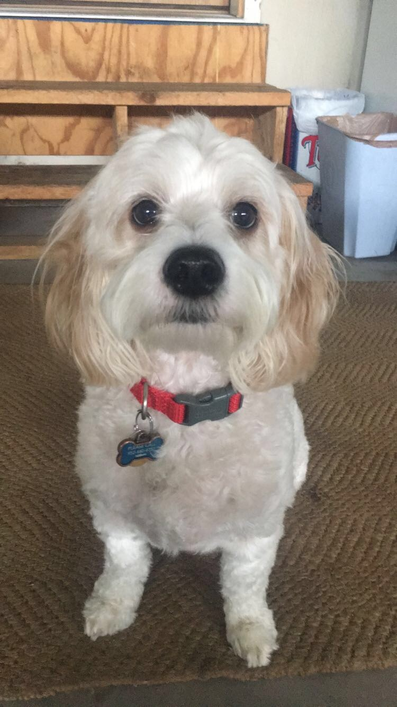

About Louie:
This is my dog, Louie:
Louie is an 8 year old Cavachon. We got him from a breeder from Iowa as a puppy and drove six hours to get him. He loves taking naps, barking at birds, and laying in the sun, but his two favorite things in the whole world are walks and my dad. He is obsessed with both and perks up when either are mentioned. This web page is dedicated to those two favorite things!